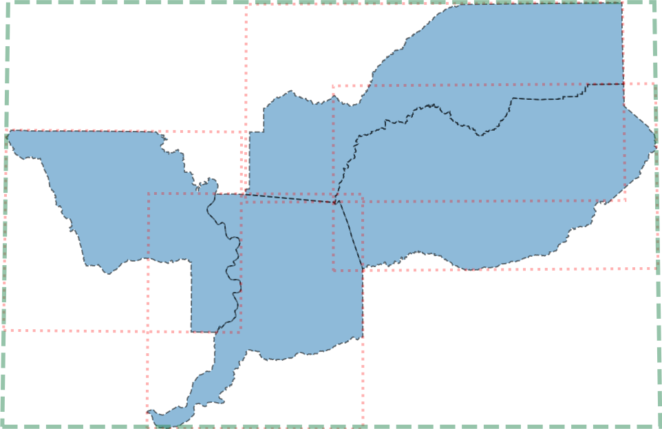
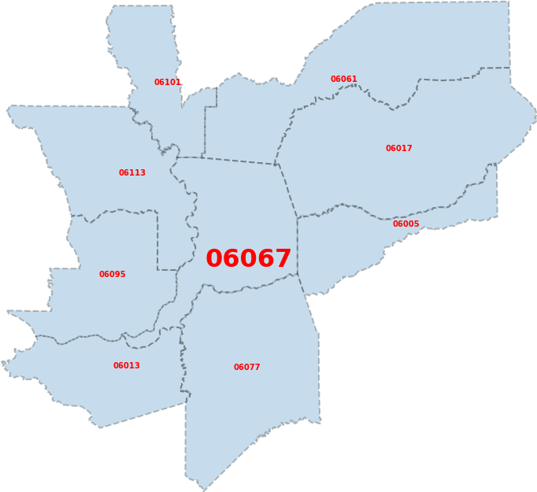
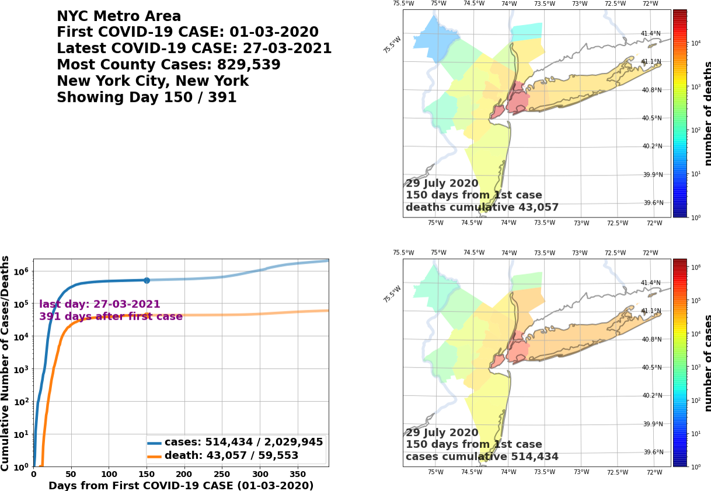
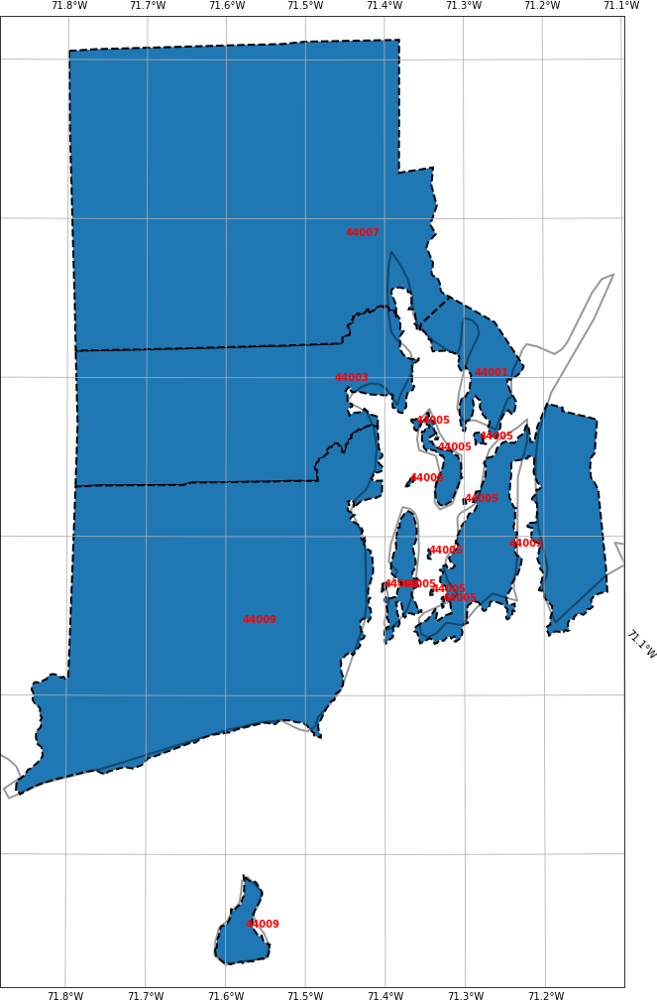
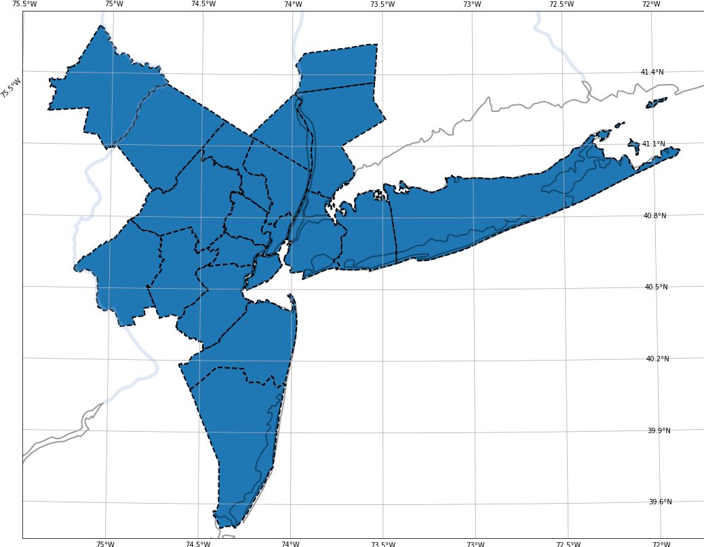
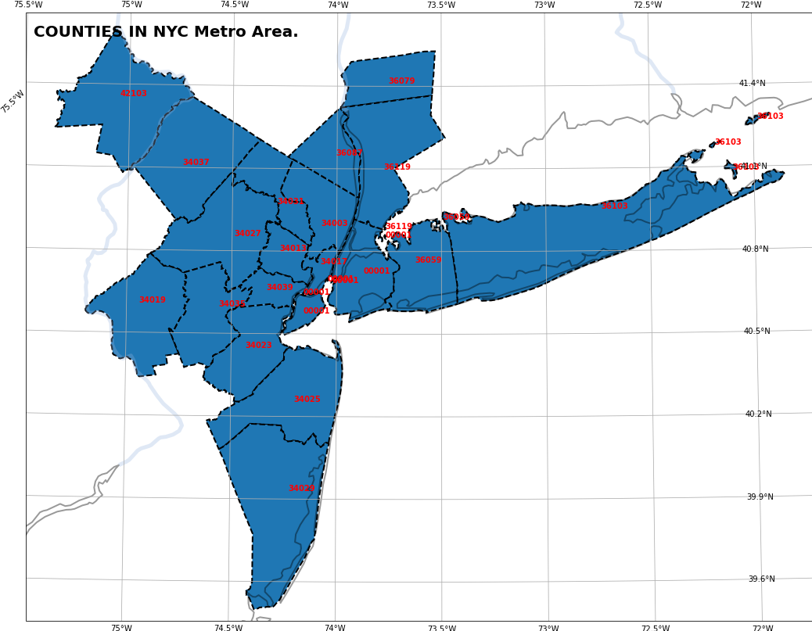
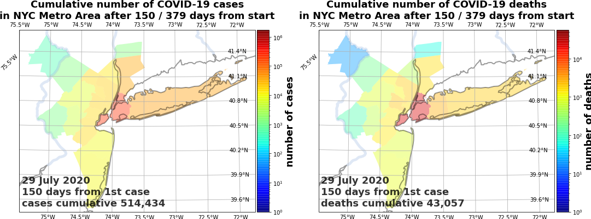

4. THE COVID19_STATS API¶
The API provides a much richer base of functionality than the CLI tools, although I have gotten very far by using them. The structure of the API consists of a singleton that contains all the GIS, full COVID-19 state of all counties in the US, and necessary configuration data. Fig. 4.1 describes the implementation flow of synthesizing COVID-19 summary data.

Fig. 4.1 COVID19Database is the singleton that contains US GIS data, and trends of cumulative COVID-19 cases and deaths for all counties and atomic territorial units within the United States. It is somewhat-lazily instantiated by GIS functionality that lives in gis, and is in turn called by utility methods in core.¶
Subsequent subsections describe each of the main modules, with special emphasis given to COVID19Database due to its integral role.
4.1. covid19_stats module¶
This is the top-level module for this repository. It defines the location of the resource directory relative to the module’s installation location (see Section 2), and the main COVID-19 database singleton object.
-
class
covid19_stats.COVID19Database¶ This class implements a singleton pattern with static access methods to US GIS data and COVID-19 cumulative summary case and death data, for territorial units within the United States. It lazily instantiates itself via GIS loading functionality.
The main data this singleton object contains is the cumulative COVID-19 cumulative cases and deaths, for US counties, produced by the NY Times COVID-19 database.
This creates a custom FIPS code, with number 00001, by melding together the five New York City boroughs (Manhattan, Brooklyn, Queens, The Bronx, and Staten Island). This makes the COVID-19 geographic data set consistent with the COVID-19 cumulative cases and deaths data sets of the NY Times COVID-19 database.
In addition to a
dictof MSA regions created or loaded bycreate_and_store_msas_and_fips_2019, this class also contains CONUS and state and territory regions dictionaries.-
classmethod
all_counties_nytimes_covid19_data()¶ - Returns
a
DataFrameof the big shebang, the reason behind the reason, for the whole data set of COVID-19 cumulative cases and deaths. It is unordered. Here are the keys in thisDataFrame:date(typedate),county(of typestring),state(of typestring),fips(the FIPS code of typestring),cumulative cases(of typeint), andcumulative death(of typeint).
As of 25 February 2021, there are almost \(10^6\) records in this
list.- Return type
-
classmethod
data_conus()¶ - Returns
the same type of region data structure for a specific MSA. Easier to show rather than describe in words this
dict.{'RNAME': 'CONUS', 'region name': 'CONUS', 'prefix': 'conus', 'fips': ['48059', '48253', '48441', '39133', '39153', '13095', '13177', '13273', '13321', '41043', '36001', '36083', '36091', '36093', ...], 'population': 308126624}
- Return type
-
classmethod
data_msas_2019()¶ - Returns
the
dictof MSA region information. It returns the same data structure as whatcreate_and_store_msas_and_fips_2019returns.- Return type
-
classmethod
data_nonconus_states_territories()¶ - Returns
the
dictof US state and territory information, for states and territories not in the CONUS. It returns the same type of data structure as whatcreate_and_store_msas_and_fips_2019returns. But better show-than-tell, here is the data for the state of Hawaii.{'hawaii': {'RNAME': 'Hawaii', 'region name': 'Hawaii', 'prefix': 'hawaii', 'fips': ['15009', '15003', '15001', '15007', '15005'], 'population': 1415786}}
The identifying key is the lowercase, no-spaced version of the state’s name. Look at the values of the
dictthatmapping_state_rname_nonconusreturns. :rtype: dict
-
classmethod
data_states()¶ - Returns
the
dictof US state information, for states in the CONUS. It returns the same type of data structure as whatcreate_and_store_msas_and_fips_2019returns. But better show-than-tell, here is the data for the state of Rhode Island.{'rhode_island': {'RNAME': 'Rhode Island', 'region name': 'Rhode Island', 'prefix': 'rhode_island', 'fips': ['44001', '44003', '44005', '44007', '44009'], 'population': 1059361}}
The identifying key is the lowercase, no-spaced version of the state’s name. Look at the values of the
dictthatmapping_state_rname_conusreturns. :rtype: dict
-
classmethod
fips_adj_2018()¶ - Returns
the
dictof adjacency information for US counties and territories. It returns the same data structure as whatconstruct_adjacencyreturns.- Return type
-
classmethod
fips_countystate_dict()¶
-
classmethod
fips_data_2018()¶ - Returns
the
dictof county geographical information. It returns the same data structure as whatcreate_and_store_fips_2018returns.- Return type
-
classmethod
fips_msas_2019()¶
-
classmethod
mapping_state_rname_conus()¶ - Returns
a
dictof state names, for states in the CONUS, to the region identifying name. Here is what it returns,{'New Mexico': 'new_mexico', 'Minnesota': 'minnesota', 'Maryland': 'maryland', 'Tennessee': 'tennessee', 'Oregon': 'oregon', 'New Hampshire': 'new_hampshire', 'Ohio': 'ohio', 'Maine': 'maine', 'Utah': 'utah', 'Alabama': 'alabama', 'Michigan': 'michigan', 'Iowa': 'iowa', 'New York': 'new_york', 'South Carolina': 'south_carolina', 'Nebraska': 'nebraska', 'Vermont': 'vermont', 'Arizona': 'arizona', 'California': 'california', 'Virginia': 'virginia', 'North Dakota': 'north_dakota', 'Kansas': 'kansas', 'District of Columbia': 'district_of_columbia', 'North Carolina': 'north_carolina', 'Delaware': 'delaware', 'Massachusetts': 'massachusetts', 'Oklahoma': 'oklahoma', 'Florida': 'florida', 'Montana': 'montana', 'Idaho': 'idaho', 'Pennsylvania': 'pennsylvania', 'Texas': 'texas', 'Illinois': 'illinois', 'Kentucky': 'kentucky', 'Mississippi': 'mississippi', 'Wyoming': 'wyoming', 'Colorado': 'colorado', 'Arkansas': 'arkansas', 'Indiana': 'indiana', 'Nevada': 'nevada', 'Georgia': 'georgia', 'New Jersey': 'new_jersey', 'Connecticut': 'connecticut', 'West Virginia': 'west_virginia', 'Louisiana': 'louisiana', 'Rhode Island': 'rhode_island', 'Wisconsin': 'wisconsin', 'Missouri': 'missouri', 'Washington': 'washington', 'South Dakota': 'south_dakota'}
- Return type
-
classmethod
4.2. covid19_stats.engine module¶
This contains all the back-end functionality used by the CLI programs (see Section 3), and two fairly simple utility functions.
-
covid19_stats.engine.find_plausible_maxnum(maxnum)¶ Returns a default plausible limit, for the plotting of COVID-19 cumulative cases and deaths located in
viz.
-
covid19_stats.engine.get_string_commas_num(num)¶ This is the secret-sauce of formatting integers as strings with commas for every 3 digits. For example,
1234becomes “1,234”. I copied code from this location.
-
covid19_stats.engine.get_string_commas_num_float(num)¶ This is the secret-sauce of formatting floats as strings with commas for every 3 digits. For example,
1234.56becomes “1,234.56”. I copied code from this other location.
4.3. covid19_stats.engine.gis module¶
The meat of the functionality, that generates post-processed GIS data describing the territorial units (counties, etc.) of the United States. Territorial unit information includes their identifiers, latitude and longitude boundary arrays as of 2018, and their estimated population in 2019.
-
covid19_stats.engine.gis.calculate_total_bbox(shapes)¶ This gets the bounding box – minimum and maximum latitude, and minimum and maximum longitude – of a
listof shapes.For example, take the Sacramento, CA, metropolitan statistical area. It consists of four counties: El Dorado County, Placer County, Sacramento County, and Yolo County. Fig. 4.2 demonstrates how this algorithm works. It takes the bounding boxes of each county’s shape (shown in pink), and then takes the minimum and maximum latitude and longitude of each county’s bbox to get the total bounding box (in green).
Fig. 4.2 Demonstration of this functionality on the four counties in the Sacramento, CA MSA. In green is the total bounding box of the lat/longitude shapes of all four counties.¶
Now here is the API description.
- Parameters
shapes (list) – A
listof shapes. Each shape is an \(N \times 2\) shapedarray, with \(N\) points describing the boundary. Each row is the latitude and longitude of a point – first is the latitude, and second is the longitude. Seegis_calculate_total_bbox_sacramento.pkl.gzfor a clear example given by Fig. 4.2.- Returns
a four element
tupleof the total bounding box of the shape collection: minimum longitude, minimum latitude, maximum longitude, and maximum latitude.- Return type
{kind=link}
-
covid19_stats.engine.gis.construct_adjacency(fips_data, filename='/usr/WS2/islam5/covid19_stats/covid19_stats/resources/fips_2018_adj.pkl.gz')¶ Creates, and then stores (or loads) the adjacency dictionary of all US counties and territorial units. If the storage file, which is by default
fips_2018_adj.pkl.gz, does not exist, then will create and store this data into the storage file. Will return the data in the end.- Parameters
fips_data (dict) – the US county
dictproduced by, for example,create_and_store_fips_2018.filename (str) – the location of the adjacency dictionary file, which is by default
fips_2018_adj.pkl.gzlocated in thecovid19_statsresource directory.
- Returns
a
dictof adjacency. Each key is a FIPS code of a county, and each value is asetof counties and other territories adjacent to it. Seeget_fips_adjacencyto see an example of this adjacency information for a single county.- Return type
-
covid19_stats.engine.gis.create_and_store_fips_2018()¶ Utility function that loads in the US CENSUS 2018 county information, located in
cb_2018_us_county_500k.shpas a collection of Shapefiles, and returns adictof county information.If there is no serialized version of this dictionary, this method also serializes the data structure,
fips_2018_data.pkl.gz, for easy reloading.Subsequently, if
fips_2018_data.pkl.gzexists, then loads that file and returns that object.- Returns
a
dictof US county geographic data. The key is the FIPS code for the county. Each value is adictbboxis the lat/lng bounding box for that county.pointsis a list of shapes for that county. Each shape is an \(N \times 2\) shapedarray, with \(N\) points describing the boundary. Each row is the latitude and longitude of a point – first is the latitude, and second is the longitude
This method uses shapefile.Reader to load in
cb_2018_us_county_500k.shpiffips_2018_data.pkl.gzdoes not exist.
-
covid19_stats.engine.gis.create_and_store_fips_counties_2019()¶ - Returns
a two element
tuple. The first element is adictof FIPS code to adictvalue:countyandstate. The second element is the reversedictof atuple(of county and state) to its FIPS code.The first
dictis stored inall_2019_fips_cs_dict.pkl.gz, and the seconddictis stored inall_2019_cs_fips_dict.pkl.gz.If either file does not exist, then the dictionary is created and stored into the appropriate file.
If the file exists, then the object is loaded from that file.
- Return type
-
covid19_stats.engine.gis.create_and_store_msas_and_fips_2019()¶ This returns a fully normalized
dictof MSAs consistent with the the NY Times COVID-19 database. Also stores this data into the file,msa_2019_dict.pkl.gz, if it does not exist. If it does exist, then loads the filemsa_2019_dict.pkl.gzand returns that data. It will also dump normalizedlistof MSA data intomsa_2019_post.pkl.gz.This method does four things:
merges San Francisco, San Jose, and Napa MSAs into the SF Bay Area.
merges NYC into the NYC metro area.
renames Washington, DC to the DC metro area.
merges Los Angeles, Riverside, and Oxnard MSAs into the “Los Angeles” metro area (greater Los Angeles).
- Returns
a
dictof MSA information. The key is the MSA dataprefix, and the value is adictofprefix,region name,fips, andpopulation. For example, for St. Louis, it is,{'stlouis': {'prefix': 'stlouis', 'region name': 'St. Louis Metro Area', 'fips': {'17005', '17013', '17027', '17083', '17117', '17119', '17133', '17163', '29071', '29099', '29113', '29183', '29189', '29219', '29510'}, 'population': 2803228}}
- Return type
-
covid19_stats.engine.gis.create_fips_popmap_2019()¶ Creates a
dictof estimated 2019 US Census population in each US county or territory. Also stores this data into the file,fips_2019_popdict.pkl.gz, if it does not exist. If it does exist, then loads the filefips_2019_popdict.pkl.gzand returns that data.
-
covid19_stats.engine.gis.create_msa_2019()¶ Creates and returns raw and unnormalized
listof Metropolitan statistical areas initially recorded inmsa_2019.csv, sorted by population from smallest to largest, and stores the object intomsa_2019.pkl.gzif it does not exist. Ifmsa_2019.pkl.gz, then loads this files and returns the subsequent object.Each entry in the
listlooks like this. For example, for St. Louis, MO MSA,{'msa': 41180, 'pop est 2019': 2803228, 'fips': {'17005', '17013', '17027', '17083', '17117', '17119', '17133', '17163', '29071', '29099', '29113', '29183', '29189', '29219', '29510'}, 'state': 'MO-IL', 'RNAME': 'St. Louis', 'prefix': 'stlouis', 'region name': 'St. Louis Metro Area'}
The keys for each MSA are
msa(an integer code),pop est 2019is the US Census 2019 estimated population,fipsis asetof counties by FIPS code located in this MSA, thestateare the states this MSA covers,RNAMEis a legend name for plotting,prefixis the name used to identify those files that contain data for this MSA, andregion nameis the common and accepted MSA name.create_and_store_msas_and_fipscontains the fully normalizeddictof Metropolitan statistical areas used by the NY Times COVID-19 database, andmerge_msasperforms the normalization.
-
covid19_stats.engine.gis.do_bbox_intersect(bbox1, bbox2)¶ Checks if two bounding boxes intersect.
-
covid19_stats.engine.gis.get_fips_adjacency(fips, fips_data)¶ Finds the FIPS code of all counties adjacent to a specified county. For example, Sacramento County, with FIPS code of 06067, has eight counties adjacent to it: 06005, 06013, 06017, 06061, 06077, 06095, 06101, 06113. Fig. 4.3 demonstrates that.
Fig. 4.3 Visualization of the eight counties adjacent to Sacramento County (06067). Sacramento County is accentuated for easier visualization here.¶
Now here is the API description.
{kind=link}
-
covid19_stats.engine.gis.merge_msas(regionName, prefix, msaids, all_data_msas)¶ This takes an input MSA, defined by its
prefix, gives it a new or existingregionName, by merging one or moresetofmsaids, in alistof MSAs as returned by, e.g.,create_msa_2019. It then returns a newlistof MSAs in the same format asall_data_msas.This is used by, for example, normalizing the MSA data by merging all five boroughs in NYC into a single fake county,
NYC, in the New York City MSA.- Parameters
regionName (str) – the region name (
region namekey) of the merged MSA.prefix (str) – the named identifier of the MSA to be merged.
msaids (set) – the collection of MSAs to be merged into
prefixMSA.all_data_msas (list) – the input
listof county or US territory FIPS codes. Implicitly,all_data_msasmust contain those the MSAs identified byprefix.
- Returns
a new
listof MSAs in the same style asall_data_msas, sorted by population from lowest to highest. None of the MSAs in this new collection contain MSAs inmsaids.- Return type
4.4. covid19_stats.engine.core module¶
This module provides the core functionality that the covid19_stats command line tools use to summarize and visualize COVID-19 case and death statistics. Here are utility methods to identify data on geographical regions such as MSAs, states, or the CONUS; to create cumulative case and death data for geographical data; and to print out summary reports of COVID-19 cases and deaths for MSAs in different formats.
-
covid19_stats.engine.core.display_tabulated_metros(form='simple', selected_metros=None)¶ Prints summary COVID-19 cumulative cases and deaths of all or selected MSAs to stdout a nice tabulated table, in either a simple format with
simple, Github flavored Markdown withgithub, reStructuredText withrst, or list-tabled reStructuredText withrst-simple.Otherwise, if one chooses
json, then returns alistof that information.This acts as an API back-end to summarizing MSAs functionality in covid19_create_movie_or_summary. Please see demonstration output for what this data looks like on screen.
- Parameters
form (str) –
If one of
simple,github,rst, orrst-simple, then prints the table of MSA summary COVID-19 data to screen. If one ofsimple,github, orrst, then usestabulateto format the data.If
json, then returns alistof summary data of COVID-19 cumulative cases and deaths for all or specified MSAs asdictentries. Thislistis sorted from largest MSA population to smallest. An example output iscore_summary_data.json. Here are the first two entries,[{'RANK': 1, 'PREFIX': 'nyc', 'NAME': 'NYC Metro Area', 'POPULATION': 19216182, 'FIRST INC.': '01 March 2020', 'NUM DAYS': 324, 'NUM CASES': 1390557, 'NUM DEATHS': 50378, 'MAX CASE COUNTY': 541846, 'MAX CASE COUNTY NAME': 'New York City, New York'}, {'RANK': 2, 'PREFIX': 'losangeles', 'NAME': 'LA Metro Area', 'POPULATION': 18711436, 'FIRST INC.': '25 January 2020', 'NUM DAYS': 360, 'NUM CASES': 1828244, 'NUM DEATHS': 21240, 'MAX CASE COUNTY': 1032277, 'MAX CASE COUNTY NAME': 'Los Angeles County, California'}]
selected_metros (list) – Optional argument. By default, will print or return information on all MSAs. Otherwise specify the
listof MSAs available as keys of thedata_msas_2019dictionary.
-
covid19_stats.engine.core.display_tabulated_metros_fromjson(summary_data_json)¶ Takes the
listdata of summary COVID-19 death in MSAs, and prints out to list-tabled reStructuredText. An example of this data structure iscore_summary_data.json.
-
covid19_stats.engine.core.get_boundary_dict(fips_collection)¶ Returns a
dictof FIPS code to the collection of geographic areas for that county. The geographic data comes fromfips_data_2018.
-
covid19_stats.engine.core.get_clustering_fips(collection_of_fips, adj=None)¶ Finds the separate clusters of counties or territorial units that are clustered together. This is used to identify possibly different clusters of counties that may be separate from each other. If one does not supply an adjacency
dict, it uses the adjacency dictionary thatfips_adj_2018returns. Look atfips_2018_adj.pkl.gzto see what this dictionary looks like.- Parameters
collection_of_fips (list) – the
listof counties or territorial units, each identified by its FIPS code.adj (dict) – optionally specified adjacency dictionary. Otherwise it uses the
fips_adj_2018returned dictionary. Look atfips_2018_adj.pkl.gzto see what this dictionary looks like.
- Returns
a
listof counties clustered together. Each cluster is asetof FIPS codes of counties grouped together.- Return type
-
covid19_stats.engine.core.get_county_state(fips)¶
-
covid19_stats.engine.core.get_data_fips(fips)¶ Given a county identified by its FIPS code, Returns the COVID-19 cumulative cases and deaths record of a single county or territorial unit identified by its FIPS code. Takes the data from the cumulative cases and deaths record of the NY Times COVID-19 database (see
all_counties_nytimes_covid19_data).- Parameters
fips (str) – the FIPS code of the county or territorial unit.
- Returns
a two-element
tuple. First element is thefips, and the second is theDataFramerepresenting the cumulative COVID-19 cases and deaths ordered by earliest to latest date. ThisDataFramehas three columns:dateis thedateof recorded incidence in that county,cases_<fips>is the cumulative COVID-19 cases on thatdate, anddeaths_<fips>` is the cumulative COVID-19 deaths on that :py:class:`date <datetime.date>`. Here, ``<fips>is the FIPS code of that county.- Return type
-
covid19_stats.engine.core.get_fips_msa(county, state)¶ Given a county and state of a county or territorial unit, returns its FIPS code and the data structure on the MSA in which this county lies.
-
covid19_stats.engine.core.get_incident_data(data=None, multiprocess=True)¶ Given geographical information on a region, will return COVID-19 cumulative statistics on all the counties or territorial units of that structure. Best to show by example.
For example, for the
bayeareaMSA, the output incident data structure for 26 February 2021 lives incore_incident_data_bayarea.pkl.gz. This structure is adictwith the following keys and values.bboxis a 4-elementtupleof the region bounding box: minimum lat/lng, and maximum lat/lng.boundariesis adictof boundary information. Each key is the FIPS code, and its value is alistof boundary lat/lngs for that county or territorial unit. Look atgis_calculate_total_bbox_sacramento.pkl.gzfor an example of this data structure.last dayis the number of days (from first COVID-19 incident) in this incident data set.dfis theDataFramethat contains COVID-19 cumulative case and death data for all counties or territorial units in that region.df_1dayis theDataFramethat contains the 1-day averaged COVID-19 new case and death data for all counties or territorial units in that region.df_7dayis theDataFramethat contains the 7-day averaged COVID-19 new case and death data for all counties or territorial units in that region.prefix` is the :py:class:`string <str>` inherited from the input ``prefixkey in thedatadict.region nameis thestringinherited from the inputregion namekey in thedatadict.populationis theintinherited from the inputpopulationkey in thedatadict.fipsis thesetinherited from the inputfipskey in thedatadict.
This
Pandas DataFrame, located under thedfkey, has the following columns ordered by first to last incident date.days_from_beginningis the day relative to the first incident. It starts at 0 and ends atlast day.datecontains thedateof the incident day, from first to last.casesare the cumulative COVID-19 cases for the whole region from first to last incident date.deathare the cumulative COVID-19 deaths for the whole region from first to last incident date.cases_<NUM>are the cumulative COVID-19 cases for a given county or territorial unit in the region (<NUM> is its FIPS code) from first to last incident date.deaths_<NUM>are the cumulative COVID-19 deaths for a given county or territorial unit in the region (<NUM> is its FIPS code) from first to last incident date.
- Parameters
data (dict) – Optional argument, but if specified is the geographical information of a region. By default is the
bayareaMSA. See St. Louis data for an example of an MSA. See Rhode Island data for an example of a US state or territory. See CONUS data for the CONUS.multiprocess (bool) – if
True, then use multiprocessing to get the incident data information, otherwise do not. Default isTrue.
- Returns
the
dictdescribed above, seecore_incident_data_bayarea.pkl.gz.- Return type
-
covid19_stats.engine.core.get_max_cases_county(inc_data)¶ Convenience method that returns a
dictof the FIPS code, county, state, and cases for the county or territorial unit, for the county in a region that has the worst number of COVID-19 cases.- Parameters
inc_data (dict) – the incident data structure for a region. See
get_incident_datafor what this output looks like.- Returns
a
dictof summary information on the worst-perfoming county in the region, COVID-19 case wise. Forcore_incident_data_bayarea.pkl.gz, this is,{'fips': '06085', 'cases': 94366, 'county': 'Santa Clara County', 'state': 'California'}
- Return type
-
covid19_stats.engine.core.get_maximum_cases(inc_data)¶ Convenience method that returns a two-element
tupleof the FIPS code and number of COVID-19 cases, for the worst-performing county, case-wise.- Parameters
inc_data (dict) – the incident data structure for a region. See
get_incident_datafor what this output looks like.- Returns
the two-element
tupleof FIPS code and cumulative number of COVID-19 cases. Forcore_incident_data_bayarea.pkl.gz, this is,('06085', 94366)
- Return type
-
covid19_stats.engine.core.get_mp4_album_name(inc_data)¶ This method operates on MP4 movie output from command line tools that produce COVID-19 case and death summary movies – such as covid19_create_movie_or_summary, covid19_state_summary, or covid19_movie_updates – or methods that create MP4 files – such as
create_summary_cases_or_deaths_movie_frombeginningorcreate_summary_movie_frombeginning.It determines whether the geographic region is classified as a
STATE,CONUS, or aMETROPOLITAN STATISTICAL AREA. It is used in four CLI functionalities:movie mode functionality for covid19_create_movie_or_summary.
movie cases death mode functionality for covid19_create_movie_or_summary.
movie cases death mode functionality for covid19_state_summary.
- Parameters
inc_data (dict) –
the
dictthat contains geographic data on the identified region. See St. Louis data for an example of an MSA geographic datadict. See Rhode Island data for an example of a US state or territory. See CONUS data for the CONUS.{'prefix': 'providence', 'region name': 'Providence Metro Area', 'fips': {'25005', '44001', '44003', '44005', '44007', '44009'}, 'population': 1624578}
- Returns
If the
prefixis one of the MSAs,METROPOLITAN STATISTICAL AREA. If itsprefixis identified as a state, thenSTATE. If its prefix isconus, thenCONUS.- Return type
-
covid19_stats.engine.core.get_msa_data(msaname)¶ - Parameters
msaname (str) – the identifier name for the MSA, which must be one of the keys in the
dictthatdata_msas_2019returns.- Returns
the MSA geographical information (see St. Louis data for example).
- Return type
4.5. covid19_stats.engine.viz module¶
This module provides visualization methods for COVID-19 cumulative cases and deaths for MSAs, states, and the CONUS. These command line interfaces – covid19_create_movie_or_summary, covid19_state_summary, and covid19_movie_updates – are front-ends to the methods in this module.
-
covid19_stats.engine.viz.create_and_draw_fromfig(fig, bbox, river_linewidth=5, river_alpha=0.3, coast_linewidth=2, coast_alpha=0.4, drawGrid=True, mult_bounds_lat=1.05, mult_bounds_lng=1.05, rows=1, cols=1, num=1)¶ This creates an
GeoAxes, with lots of physical geographic features, and optional (but turned on by default) latitude and longitude gridding, of a region specified by a bounding box. This uses stereographic projection. For example, here is theGeoAxesdisplaying the CONUS.
Fig. 4.4 Demonstrations of this functionality, which underlies (or overlays?) the geographical features for visualizing COVID-19 cases and deaths.¶
Here are the arguments.
- Parameters
fig – the
Figureonto which to create aGeoAxescontaining geographic features. Last three arguments –rows,cols, andnum– describe the relative placement of the createdGeoAxes. Seeadd_subplotfor those three arguments’ meanings.bbox (tuple) – a four-element
tuple. Elements in order are minimum longitude, minimum latitude, maximum longitude, and maximum latitude.river_linewidth (int) – the width, in pixels, of river geographical features.
river_alpha (float) – the color alpha of river geographical features.
coast_linewidth (int) – the width, in pixels, of the coast lines.
coast_alpha (float) – the color alpha of coast lines.
drawGrid (bool) – if
True, then overlay the latitude and longitude grid lines. Otherwise do not. Default isTrue.mult_bounds_lat (float) – often times, especially with geographic regions that cover a significant area of the earth, we need to put a multiplier \(> 1\) on the latitudinal extent of the plot, so that all features can be seen. By default this value is 1.05, but it must be \(\ge 1\).
mult_bounds_lng (float) – often times, especially with geographic regions that cover a significant area of the earth, we need to put a multiplier \(> 1\) on the longitudinal extent of the plot, so that all features can be seen. By default this value is 1.05, but it must be \(\ge 1\).
rows (int) – the number of rows for axes in the
Figuregrid. Must be \(\ge 1\), and by default is 1.cols (int) – the number of columns for axes in the
Figuregrid. Must be \(\ge 1\), and by default is 1.num (int) – the plot number of the
GeoAxesin thisFiguregrid. Must be \(\ge 1\) and \(\le\)rowstimescolumns. Its default is 1. Look atadd_subplotfor its meaning.
- Return type
-
covid19_stats.engine.viz.create_plots_daysfrombeginning(inc_data, regionName, prefix, days_from_beginning=[0], dirname='/usr/WS2/islam5/covid19_stats/docsrc', maxnum_colorbar=5000)¶ Creates a collection of quad PNG images (see Section 3.2.3 or Section 3.3.2) representing state of cumulative COVID-19 cases and deaths for a geographical region. Like movie mode in covid19_create_movie_or_summary or state movie mode, the four quadrants are,
upper leftis the summary information for the geographical region.lower leftis the running tally of cumulative cases and deaths, by day from first incident.upper rightis the logarithmic coloration of cumulative deaths, by day from first incident.lower rightis the logarithmic coloration of cumulative cases, by day from first incident.
create_summary_movie_frombeginninguses this functionality in a multiprocessing fashion to create MP4 movie files geographical regions. It is easier to show rather than tell. Fig. 4.5 is a quad plot of cumulative COVID-19 cases and deaths NYC metro area, 150 days after this metro’s first COVID-19 incident, that is created by this function.Fig. 4.5 Quad plot of cumulative COVID-19 cases and deaths for the NYC metro area, 150 days after its first incident. The name of the file is
covid19_nyc_LATEST.0150.png.¶The collection of PNG images that this method creates are auto-cropped and, where needed, resized so that their widths and heights are even numbers. FFmpeg, run through
create_summary_movie_frombeginning, cannot create an MP4 from PNGs unless the images’ widths and heights are divisible by 2.- Parameters
inc_data (dict) – the data for incidence of COVID-19 cases and deaths for a given geographical region. See
get_incident_datafor the format of the output data.regionName (str) – the name of the region to display in title plots. For example, in Fig. 4.10, this is
NYC Metro Area.prefix (str) – the identifying name to put into the output PNG files. For example, in Fig. 4.5, the
prefixisnyc, and the name of the file iscovid19_nyc_LATEST.0150.png. If the prefix isconus, then this module creates plots appropriate for geographic regions (such as CONUS) that cover significant areas of the earth’s surface.days_from_beginning (list) – the
listof days to create quad PNG images. Must be nonempty, and every element must be \(\ge 0\). Default is[ 0, ].dirname (str) – the directory into which to save the quad PNG images. The default is the current working directory.
maxnum_colorbar (float) – the coloring limits for the plots of cumulative cases (lower right) and cumulative deaths (upper right). Must be \(\ge 1\).
- Returns
the
listof filenames of PNG quad images that this method creates, intodirname. For example, in the method invocation shown in Fig. 4.5,days_from_beginning = [ 150, ], and the list this method returns is[ '<dirname>/covid19_nyc_LATEST.0150.png', ].- Return type
{kind=link}
-
covid19_stats.engine.viz.create_summary_cases_or_deaths_movie_frombeginning(inc_data, maxnum_colorbar=5000.0, type_disp='cases', dirname='/usr/WS2/islam5/covid19_stats/docsrc', save_imgfiles=False)¶ This is the back-end method for movie cases deaths mode for covid19_create_movie_or_summary, and state movie cases deaths mode for covid19_state_summary. This creates an MP4 movie file of cumulative COVID-19 cases or deaths, with identifying metadata, for a given geographical region. Table 4.1 shows the resulting MP4 movie files, of cumulative COVID-19 cases and deaths, for the NYC metro area (top row), and the state of Virginia (bottom row).
Table 4.1 Latest cumulative COVID-19 cases, and deaths, for the NYC metro area and Virginia¶ NYC metro area, latest movie of COVID-19 cumulative cases
NYC metro area, latest movie of COVID-19 cumulative deaths
Virginia, latest movie of COVID-19 cumulative cases
Virginia, latest movie of COVID-19 cumulative deaths
Here are the arguments,
- Parameters
inc_data (dict) – the data for incidence of COVID-19 cases and deaths for a given geographical region. See
get_incident_datafor the format of the output data.maxnum_colorbar (float) – the coloring limits for the plot. Must be \(\ge 1\).
type_disp – if
cases, then show cumulative COVID-19 cases. Ifdeaths, then show cumulative COVID-19 deaths. Can only becasesordeaths.dirname (str) – the directory into which to save the MP4 movie file, and optionally a zip archive of the PNG image files used to create the MP4 movie. The default is the current working directory.
save_imgfiles (bool) – if
True, then will create a zip archive of the PNG image files used to create the MP4 movie. Its full name is<dirname>/covid19_<prefix>_<type_disp>_LATEST_imagefiles.zip.<dirname>is the directory to save the MP4 file,<prefix>is the region name prefix (for examplenycfor the NYC metro area) located ininc_data['prefix'], and<type_disp>is eithercasesordeath. The default isFalse.
- Returns
the base name of the MP4 movie file it creates. For example, if
inc_data['prefix']isnycandtype_dispiscases, this method returnscovid19_nyc_cases_LATEST.mp4. This method also saves the MP4 file as<dirname>/covid19_nyc_cases_LATEST.mp4, where<dirname>is the directory to save the MP4 file.- Return type
-
covid19_stats.engine.viz.create_summary_movie_frombeginning(inc_data, maxnum_colorbar=5000.0, dirname='/usr/WS2/islam5/covid19_stats/docsrc', save_imgfiles=False)¶ This is the back-end method for movie mode for covid19_create_movie_or_summary, and state movie mode for covid19_state_summary. This creates an MP4 quad movie file of both cumulative COVID-19 cases and deaths for a geographical region, and optionally a zip archive of PNG images used to create the MP4 file. This uses
create_plots_daysfrombeginningin a multiprocessing function, to create sub-collections of PNG quad images, and then collate them into an MP4 file using FFmpeg. Table 4.2 shows the resulting MP4 movie files, of cumulative COVID-19 cases and deaths, for the NYC metro area and the state of Virginia.Table 4.2 Latest cumulative quad movies of COVID-19 for the NYC metro area and Virginia¶ NYC metro area, latest quad movie of COVID-19 cumulative cases and deaths
Virginia, latest quad movie of COVID-19 cumulative cases and deaths
Here are the arguments,
- Parameters
inc_data (dict) – the data for incidence of COVID-19 cases and deaths for a given geographical region. See
get_incident_datafor the format of the output data.maxnum_colorbar (float) – the coloring limits for the plots of cumulative cases (lower right) and cumulative deaths (upper right) in the quad movie. Must be \(\ge 1\).
dirname (str) – the directory into which to save the MP4 movie file, and optionally a zip archive of the PNG image files used to create the MP4 movie. The default is the current working directory.
save_imgfiles (bool) – if
True, then will create a zip archive of the PNG image files used to create the MP4 movie. Its full name is<dirname>/covid19_<prefix>_LATEST_imagefiles.zip.<dirname>is the directory to save the MP4 file, and<prefix>is the region name prefix (for examplenycfor the NYC metro area) located ininc_data['prefix']. The default isFalse.
- Returns
the base name of the MP4 movie file it creates. For example, if
inc_data['prefix']isnyc, this method returnscovid19_nyc_LATEST.mp4. This method also saves the MP4 file as<dirname>/covid19_nyc_LATEST.mp4, where<dirname>is the directory to save the MP4 file.- Return type
-
covid19_stats.engine.viz.display_fips(collection_of_fips, fig, **kwargs)¶ Method that is very similar to
display_fips_geom, except this also displays the FIPS code of each county. For example, for Rhode Island, this is.Fig. 4.6 Demonstration of this method showing the counties in Rhode Island. The FIPS code of each county is shown in red. One can extract the patches in this object to manually change the colors of these county polygons.¶
Here are the arguments.
{kind=link}
-
covid19_stats.engine.viz.display_fips_geom(fips_data, fig, **kwargs)¶ Demonstrative plot, returning a
GeoAxes, of a FIPS data collection. For example, for the NYC Metro Area, this is,Fig. 4.7 Demonstration of this method showing the counties in the NYC Metro Area. One can extract the patches in this object to manually change the colors of these county polygons.¶
Here are the arguments.
{kind=link}
-
covid19_stats.engine.viz.display_msa(msaname, fig, doShow=False, **kwargs)¶ Convenience method that visualizes and labels, by FIPS code, the counties in a Metropolitan Statistical Area. It can optionally save the output to a file,
msa_<msaname>_counties.png. Here is an example of the NYC Metro Area.Fig. 4.8 Display of the NYC Metro Area, with extra annotations beyond what
display_fipscan do.¶Here are the arguments.
{kind=link}
-
covid19_stats.engine.viz.get_summary_demo_data(inc_data, maxnum_colorbar=5000.0, dirname='/usr/WS2/islam5/covid19_stats/docsrc', store_data=True)¶ This is the back-end method for show mode for covid19_create_movie_or_summary, and state show mode for covid19_state_summary. This creates six or seven files for a given geographical region. Given an input
inc_datadict, it produces six files by default. Hereprefixis the value ofinc_data['prefix'](for examplenycfor the NYC metro area).covid19_<prefix>_cases_LATEST.pdfandcovid19_<prefix>_cases_LATEST.png: a PDF and PNG plot of the latest cumulative COVID-19 cases for the geographical region.covid19_<prefix>_death_LATEST.pdfandcovid19_<prefix>_death_LATEST.png: a PDF and PNG plot of the latest cumulative COVID-19 deaths for the geographical region.covid19_<prefix>_cds_LATEST.pdfandcovid19_<prefix>_cds_LATEST.png: a PDF and PNG plot of the latest cumulative COVID-19 case and death trend lines for the geographical region.
Optionally, one can choose to dump out a serialized
Pandas DataFrameof the COVID-19 cases and deaths, total and per county, from the date of first incident to the latest incident. Its file name iscovid19_<prefix>_LATEST.pkl.gz.Table 4.3 displays the latest output for the NYC metro area.
Table 4.3 Latest plots of cumulative COVID-19 cases, deaths, and trend lines for the NYC metro area¶ 


NYC metro area, plot of latest COVID-19 cumulative cases
NYC metro area, plot of latest COVID-19 cumulative deaths
NYC metro area, plot of latest trend lines of COVID-19 cumulative cases and deaths
Here are the arguments.
- Parameters
inc_data (dict) – the data for incidence of COVID-19 cases and deaths for a given geographical region. See
get_incident_datafor the format of the output data.maxnum_colorbar (float) – the coloring limits for the cumulative COVID-19 cases and deaths plots. Must be \(\ge 1\).
dirname (str) – the directory into which to save the six or seven files. The default is the current working directory.
store_data (bool) – if
True, then create the serializedPandas DataFrameof the COVID-19 cases and deaths, total and per county, from the date of first incident to the latest incident. Default isTrue.
-
covid19_stats.engine.viz.my_colorbar(mappable, ax, **kwargs)¶ secret saucing (explanation is incomprehensible) from https://joseph-long.com/writing/colorbars. I do not understand how it works the way it does, but it does! I shamelessly copy the method description from the
colorbar method. I have also updated this thing to this website that now works onGeoAxes.- Parameters
mappable – a
ScalarMappabledescribed by this colorbar.ax – the parent
Axesfrom whose space a new colorbar axes will be stolen.
- Returns
the underlying
Colorbar.- Return type
-
covid19_stats.engine.viz.plot_cases_deaths_region(inc_data, regionName, ax, days_from_beginning=0, doTitle=True)¶ Plots trend lines of cumulative COVID-19 cases and deaths for a region. It is easier to show rather than tell. Fig. 4.9 depicts trend lines of cumulative COVID-19 cases and deaths for the NYC metro area, 150 days after this metro’s first COVID-19 incident.

Fig. 4.9 Plot of cumulative COVID-19 cases and deaths for the NYC metro area, 150 days after its first incident. Plot scaling is logarithmic, and dots accentuate the state of the cumulative cases and deaths 150 days after first incident. We have chosen to display the title.¶
Here are the arguments.
- Parameters
inc_data (dict) – the data for incidence of COVID-19 cases and deaths for a given geographical region. See
get_incident_datafor the format of the output data.regionName (str) – the name of the region to display in title plots. For example, in Fig. 4.10, this is
NYC Metro Area.ax – the
Axesonto which to make this plot.days_from_beginning (int) – days after first incident of COVID-19 in this region. Must be \(\ge 0\).
doTitle (bool) – if
True, then display the title over the plot. Default isTrue.
-
covid19_stats.engine.viz.plot_cases_or_deaths_bycounty(inc_data, regionName, fig, type_disp='cases', days_from_beginning=0, maxnum_colorbar=5000.0, doTitle=True, plot_artists={}, poly_line_width=1.0, doSmarter=False, rows=1, cols=1, num=1)¶ The lower-level function that displays the status of COVID-19 cases or deaths given an incidident data
dict,inc_data. It displays the status of cumulative COVID-19 cases or deaths, a specific number of days from the beginning, coloring the counties in that region according to the legend maximum, and places the resultingGeoAxesat a specific location in aFiguregrid ofAxesor :py:class:`GeoAxes <cartopy.mpl.GeoAxes>.Instead of returning a
GeoAxes, this initializes adictof matplotlib objects,plot_artists. In this way, subsequent plots, e.g. for different days after the beginnning, do not have to perform the relatively costly operation of recreating theGeoAxesand fully painting in thePolygonpatches; instead, thesePolygonpatches are re-colored and necessaryTextartists’ strings are changed.This
dict,plot_artists, has the following keys,axes: when initialized, theGeoAxesthat consists of all counties, with COVID-19 cases or deaths, to display.sm: theScalarMappabledescribing the coloration by value for each county.
Furthermore, it is easier to show rather than tell. Fig. 4.10 depicts both cumulative COVID-19 cases and deaths for the NYC metro area, 150 days after this metro’s first COVID-19 incident.
Fig. 4.10 On the left, is the COVID-19 cumulative cases, and on the right, is the COVID-19 cumulative deaths, for the NYC metro area, 150 days after its first COVID-19 incident. The color limits for cases (left) is \(1.7\times 10^6\), while the color limits for death (right) is \(5.6\times 10^4\). We have chosen to display the titles over both plots. Color scaling is logarithmic.¶
Here are the arguments.
- Parameters
inc_data (dict) – the data for incidence of COVID-19 cases and deaths for a given geographical region. See
get_incident_datafor the format of the output data.regionName (str) – the name of the region to display in title plots. For example, in Fig. 4.10, this is
NYC Metro Area.fig – the
Figureonto which to create aGeoAxes(stored into theplot_artistsdict) containing geographic features. Last three arguments –rows,cols, andnum– describe the relative placement of the createdGeoAxes. Seeadd_subplotfor those three arguments’ meanings.type_disp (str) – if
cases, then show cumulative COVID-19 cases. Ifdeaths, then show cumulative COVID-19 deaths. Can only becasesordeaths.days_from_beginning (int) – days after first incident of COVID-19 in this region. Must be \(\ge 0\).
maxnum_colorbar (float) – the coloring limits for the plot. Must be \(\ge 1\).
doTitle (bool) – if
True, then display the title over the plot. Default isTrue.plot_artists (dict) – this contains the essential plotting objects for quicker re-display when plotting different days. Look at this description.
poly_line_width (float) – the line width of the counties to draw in the plot.
doSmarter (bool) – if
False, then make a plot tailored for small regions (relative to the size of the earth), such as states or MSAs. IfTrue, then make a plot tailored for large regions such as the CONUS. Default isFalse.rows (int) – the number of rows for axes in the
Figuregrid. Must be \(\ge 1\), and by default is 1.cols (int) – the number of columns for axes in the
Figuregrid. Must be \(\ge 1\), and by default is 1.num (int) – the plot number of the
GeoAxesin thisFiguregrid. Must be \(\ge 1\) and \(\le\)rowstimescolumns. Its default is 1. Look atadd_subplotfor its meaning.
{kind=link}